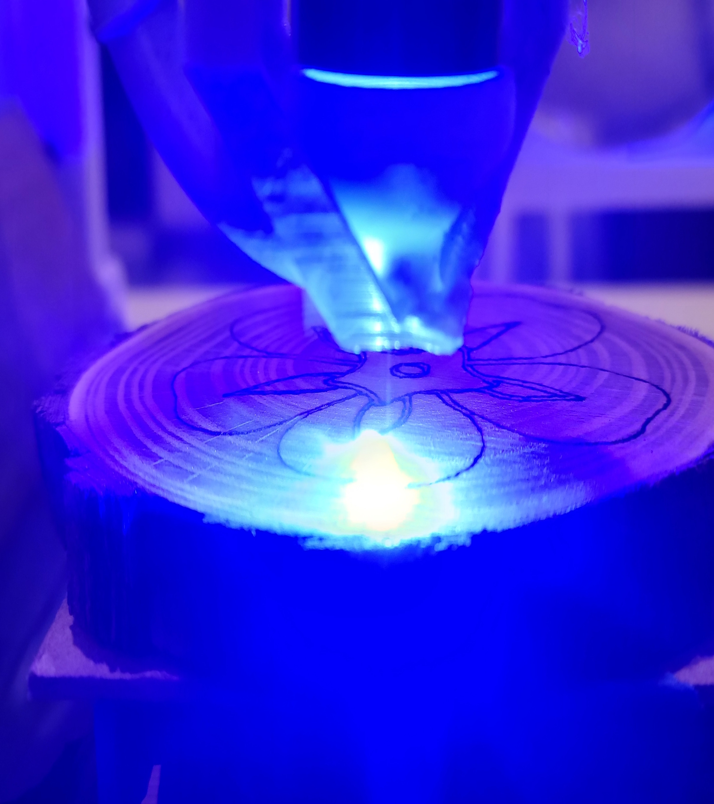
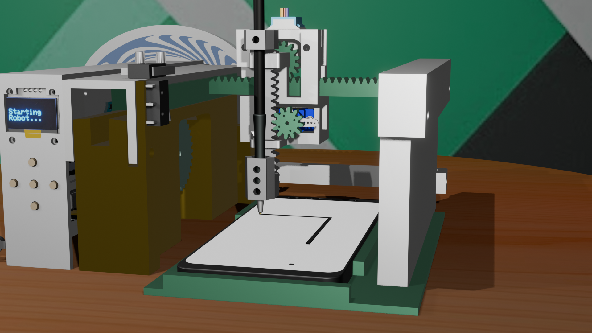

Here are several projects I am currently working on
or have worked on in the past. The most recent projects are listed at the top of their related section.
Robotics
6DOF Linear Trajectory, IK, & FK
A part 2 to my 6DOF Revyn Robot Arm project. Here I create a Linear Trajectory generator that uses inverse
kinematics and forward kinematics to maintain orientation as the robot moves between 2 positions.
Check it out here
6DOF Robot Arm Mechanical Design
The design of a 6DOF Robot Arm I am calling the Revyn Arm. I discuss the design requirements, my steps
to CAD design and electronics design. I discuss why I made certain design decisions and present professional drawings and documentation.
Check it out here
Design of a Custom Laser Cutter/Engraver

The design of a custom laser cutter/engraver. I discuss the approach I took to designing the machine, the materials I used, and the software I used to control it.
CAD models and documentation are available and my Shayvin Engraving wood burnings are shown.
Check it out here
3Axis Machine

The design of a 3Axis CNC machine. I discuss the approach I took to designing the machine, the materials I used, and the software I used to control it.
CAD models and documentation are available as well.
Check it out here
Computer Vision
Hand Eye Calibration
This is a 3D homography camera calibration for the Revyn Arm with a webcam attached to the end effector.
In this project I explain how I use OpenCV with python to undistort fisheye images and calibrate the robot arm to understand
its location in 3D space using several images of a checkerboard.
Check it out here
UR5 Visual Hand Control Via Mediapipe
This project implements a visual hand control system for the UR5 robot using Mediapipe for hand tracking.
The system captures the user's hand movements and translates them into commands for the robot, allowing for intuitive control over ROS.
Check it out here
Machine Learning
Video Filler Remover
This is a simple video filling algorithm using Open AI's whisper model with Python to remove filler words.
For vlog-style videos or interviews this python program can clip videos with moviepy to automatically edit recordings
simplifying the editing process.
Check it out here
Mechanical Design
General CAD Portfolio
Here is a compiled portfolio of my preliminary CAD work that helped me learn and develop my skills in robotics and mechanical design.
Many of my models are made in either Solidworks of Fusion 360. I am equally comfortable working in either environment, and I am not afraid of
spending time making high quality drawings for parts. I also dable in making electronic schematics and occasionally just designing asthetic pieces.
The metal clamp opener was for a research project involving metal spinal implants.
I actually hand manufactured the pipsqueak engine and it ran smoothly when I tested it. I also made and programmed the line following robot using a PIC24F. Finally, I made the haptic shoe insole,
and developed a simple control algorithm for vibrating motors on the thigh shank when pressure is placed on the insole force sensors.
Check it out here